Bikcraft

Dê uma olhada no Protótipo
Dê uma olhada no em HTML pelo link: Site Bikecraft
A ideia
O Bikecraft é uma marca fictícia de venda de bicicletas elétricas que precisa de um site, feita durante o curso UI Design para iniciantes, da Origamid. Esse estudo foi desenvolvido para simular alguns processos do desenvolvimento de um site.
Método
.jpg)
O método de desenvolvimento usado foi o Design Thinking, sendo uma metodologia que permite a criação de soluções inovadoras e diferenciadas, aplicáveis. Para qualquer tipo de problema, desde questões empresariais até problemas sociais.
As etapas do Design Thinking são interconectadas e iterativas. O que significa que a equipe pode passar de uma fase para outra e voltar atrás se necessário. As cinco etapas do Design Thinking são Empatia, Definição do Problema, Ideação, Prototipagem e Teste.
Etapas e suas entregas
Empatia
A primeira fase do Design Thinking é a Empatia, que é o processo de entender o usuário e suas necessidades. Nesta fase, a equipe deve realizar pesquisas e entrevistas com usuários. Observar seus comportamentos e identificar suas necessidades, desejos e desafios. Esta fase é crucial para a compreensão do problema. E para a criação de soluções que atendam às necessidades reais do usuário.
Neste projeto será usado a Matriz CSD, para fazer levantamentos e fazer um plano de ação para os primeiros passos. Logo após os direcionamento decidido, será necessário fazer uma pesquisa e a criação de uma persona, pera reforçar quais são os problemas a serem resolvidos com este aplicativo.
Definição do problema
Após a fase de Empatia, a equipe deve definir o problema a ser resolvido. Nesta fase, a equipe deve analisar todas as informações coletadas durante a fase de Empatia. E identificar as necessidades e desejos mais importantes dos usuários. É importante definir o problema de forma clara e concisa, para que a equipe possa se concentrar na solução correta.
Ideação
A terceira fase do Design Thinking é a Ideação, que é o processo de gerar ideias para resolver o problema. Nesta fase, a equipe deve se concentrar em gerar uma grande quantidade de ideias. Sem se preocupar com a sua viabilidade ou implementação. O objetivo é criar um ambiente livre de julgamentos e incentivar a criatividade.
Prototipagem
O objetivo da fase de Prototipagem é testar as soluções para identificar possíveis problemas e refiná-las antes da implementação.
Algumas das técnicas utilizadas na fase de Prototipagem incluem a criação de protótipos de papel, que são representações simples da solução em papel. E a prototipagem rápida, que é uma técnica para criar protótipos de baixa fidelidade rapidamente
Protótipos de Baixa, Média e Alta fidelidade serão usados no desenvolvimento.
Teste
Processo de testar os protótipos com os usuários reais dentro do público alvo e obter feedback para aprimorar a solução.
Etapa 1 - Empatia
Matriz CSD
A Matriz CSD é um método utilizado para iniciar projetos. Sua sigla significa Certezas, Suposições e Dúvidas. Seu objetivo é justamente reunir todas as certezas, suposições e dúvidas entre os membros da equipe para que todos estejam cientes das informações disponíveis.
.jpg)
A partir desse levantamento, pôde-se elaborar um plano de ação inicial.
.jpg)
Benchmark
Para entender melhor o que a concorrência estava fazendo, foi feito uma pesquisa de Benchmark e essa pesquisa, baseada nos sites que o cliente mostrou preferência, nos mostrou alguns pontos em comum, que foram usados para o desenvolvimento do site. Os sites foram: Goley, Loja GTSM1 e OggiBikes
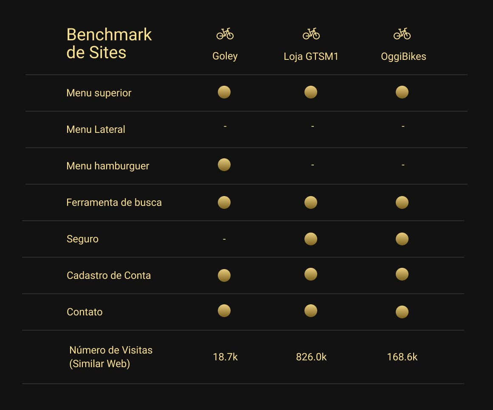Persona
O público alvo mais encontrado pela observação nos Benchmarks são pessoas interessadas em ter uma maior mobilidade. Normalmente, jovens com interesse em tecnologia, em sustentabilidade, de 25 a 35 anos, que já estejam bem empregados.
Com isso foi criada uma persona para poder observar os problemas que esse usuário tem e suas motivações para buscar um meio alternativo de transporte.
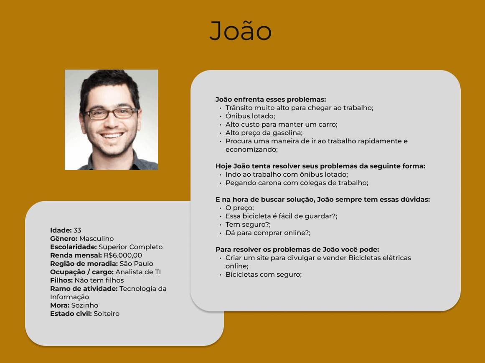Etapa 2 - Definições dos Problemas
De acordo com as análises de Benchmark e público-alvo possível entender um pouco melhor do público a ser atingido, dando abertura para a criação de uma persona, para imaginar como é este usuário, podendo entender um pouco qual é a maior dificuldade enfrentada.
Uma razão que faz esse tipo de cliente comprar uma bicicleta é a grande dificuldade de locomoção dentro das grandes cidades, como o trânsito ou meios de transporte públicos ruins e lotados.
Esse tipo de pessoa busca velocidade e praticidade, inclusive na compra e o site deve refletir essa praticidade, sendo rápido, direto e informativo sobre os produtos.
Etapa 3 - Ideação
O desenvolvimento do Projeto
Fluxo
O funcionamento do site segue o seguinte fluxo:
Em todas as páginas, existe um menu superior, que tem os ícones Bicicletas, Seguros e Contatos, que levam para suas respectivas páginas e clicando no logo da empresa, você voltará ao menu inicial.
Descendo mais um pouco na página principal, na área escolha a sua, você será levado à página Bicicletas, onde poderá escolher uma bicicleta e será levado a página Bicicleta interna, onde verá mais informações da Bicicleta escolhida. Tendo decidido comprar a bicicleta, você será redirecionado para a página de orçamentos, para finalizar o pedido.
Voltando à página principal, na área dos componentes, você também será redirecionado para a página Bicicletas.
Na página principal, na área Parceiros e Comentários não existem redirecionamentos.
Mais abaixo, na página principal, tem a página de seguros, onde você pode ter mais informações, caso queira contratar um seguro, e sendo redirecionado para a página Orçamentos, caso queira contratar um seguro.
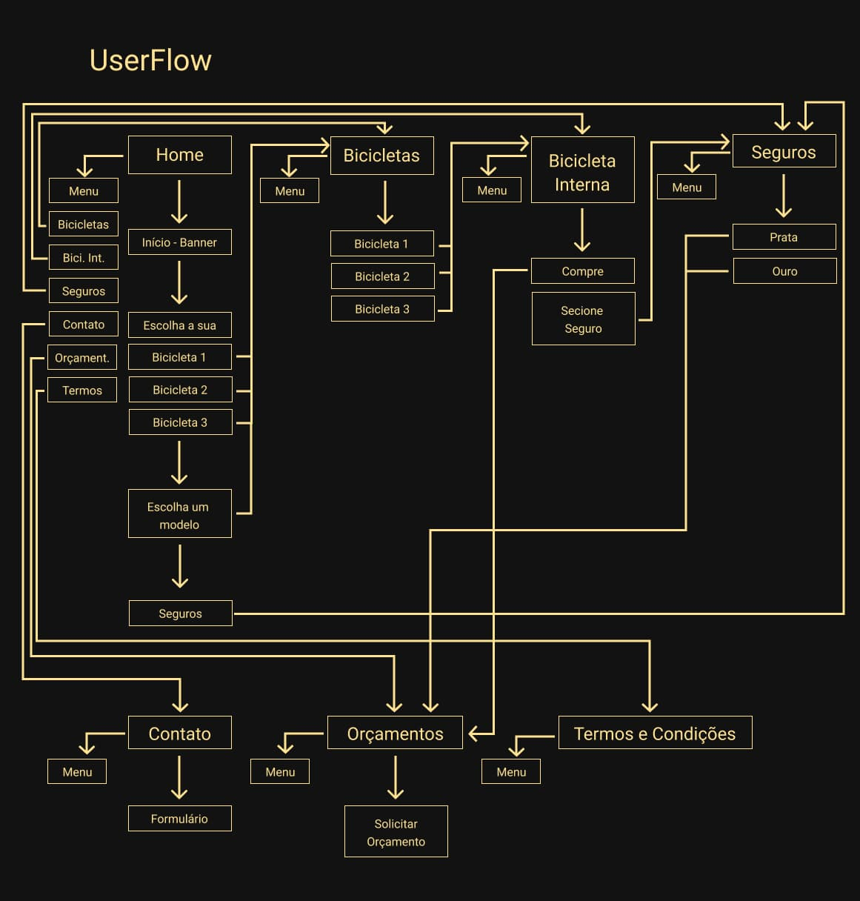Etapa 4 - Prototipagem
Foi criado um site para atender as necessidades do cliente, sendo desenvolvido, a partir da análise do Briefing do cliente, do estudo da concorrência e de um levantamento do público do cliente. Com o desenvolvimento da ideia, houve algumas mudanças, como a mudança de alguns títulos ou a ordem de aparência do comentário do cliente e das parcerias, que foram invertidas no seu desenvolvimento.

Cores e Tipografia
As cores foram escolhidas para combinar com o logotipo da empresa. Já a tipografia, foram escolhidas as Fontes Poppins e Roboto. Poppins para títulos e Roboto para textos. As cores escolhidas foram tons de amarelo e tons de cinza.
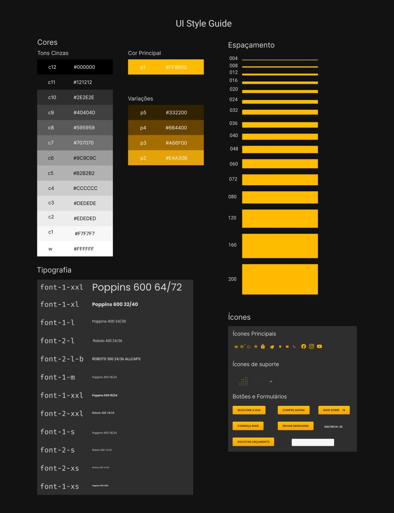Protótipo de Alta fidelidade
O site é composto de 7 páginas: Página principal, Bicicletas, Bicicletas internas, Página de Seguros, Contato, Orçamento e Termos e condições.
Em todas as páginas, existe um menu superior, que tem os ícones Bicicletas, Seguros e Contatos, que levam para suas respectivas páginas e clicando no logo da empresa, você voltará ao menu inicial.
Descendo mais um pouco na página principal, na área escolha a sua, você será levado à página Bicicletas, onde poderá escolher uma bicicleta e será levado a página Bicicleta interna, onde verá mais informações da Bicicleta escolhida. Tendo decidido comprar a bicicleta, você será redirecionado para a página de orçamentos, para finalizar o pedido.
Voltando à página principal, na área dos componentes, você também será redirecionado para a página Bicicletas.
Na página principal, na área Parceiros e Comentários não existem redirecionamentos.
Mais abaixo, na página principal, tem a página de seguros, onde você pode ter mais informações, caso queira contratar um seguro, e sendo redirecionado para a página Orçamentos, caso queira contratar um seguro.
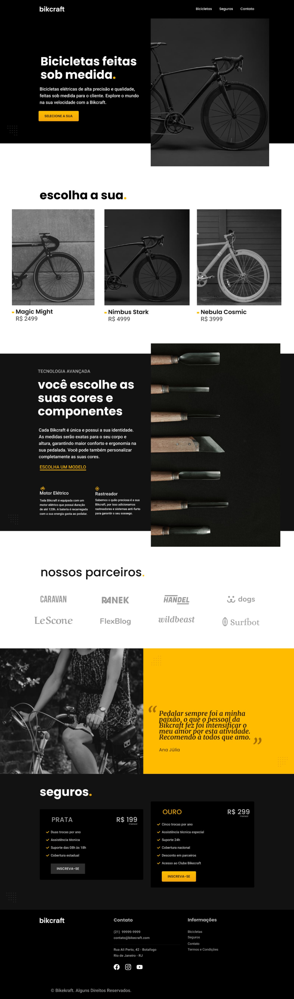 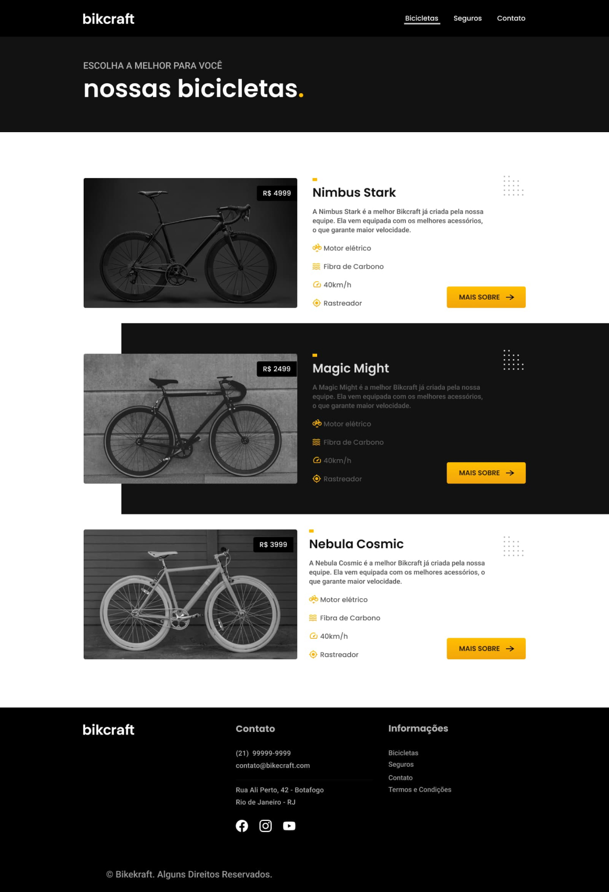 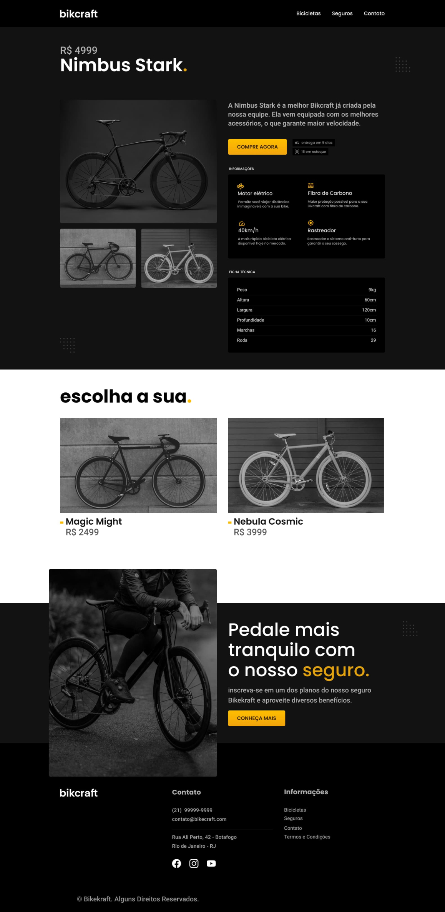 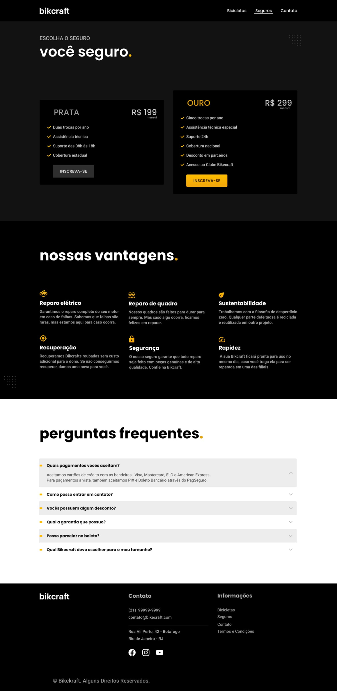 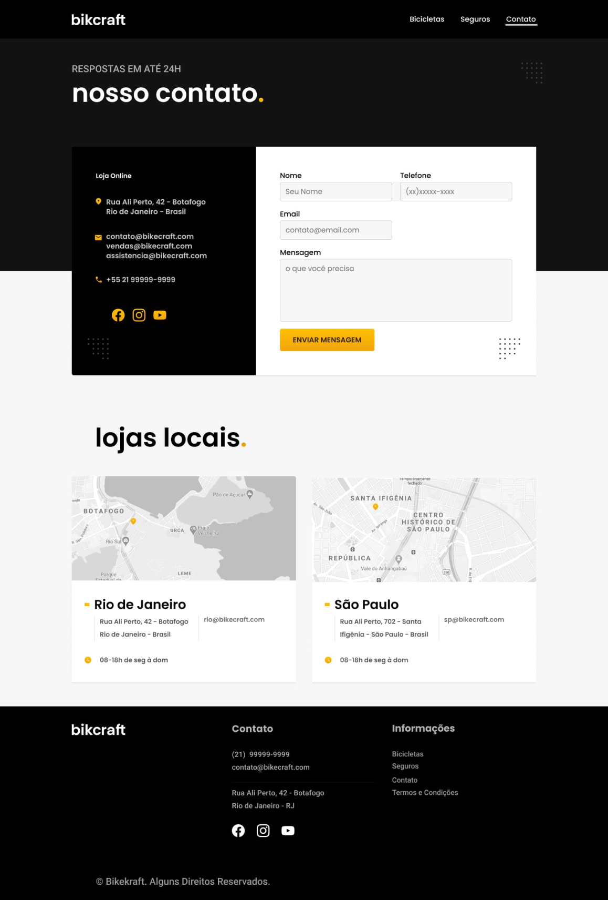 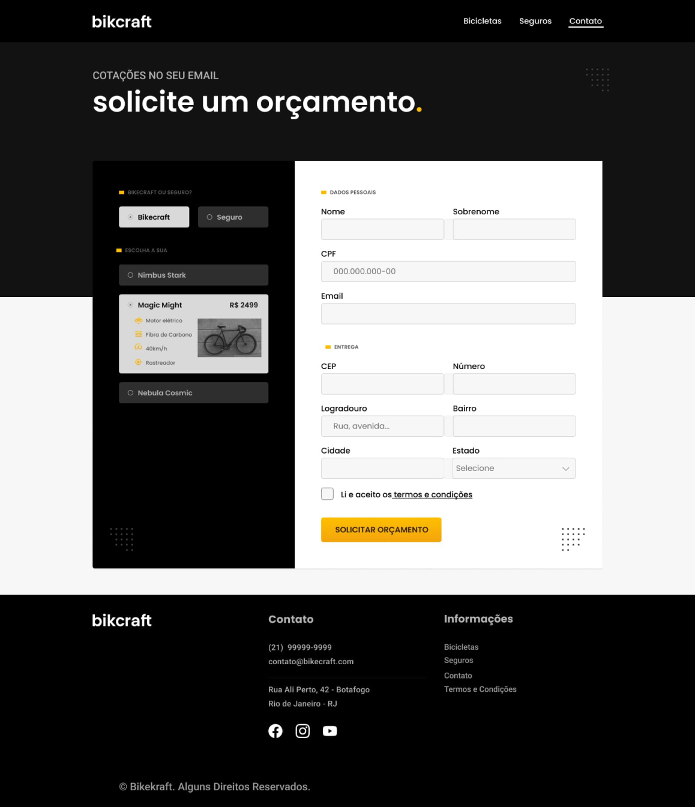 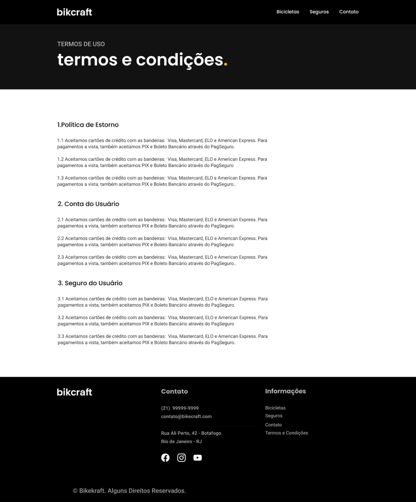Conclusão
De acordo com as pesquisas, as pessoas que mais usariam esse tipo de site são jovens, bem empregados, insatisfeitos com a maneira que o transporte público funciona atualmente em grandes cidades. Muitos deles, até preocupados com sustentabilidade e poluição.
Para atender essa demanda, foi desenvolvido com um site com uma tela home, uma sobre os produtos, outra sobre seguros, comentários e, por fim, a tela de compras e contatos.
O site precisa passar por um período de testes e ajustes, para se comprovar que esse tipo de cliente realmente se atrai por este conteúdo, utilizando ferramentas de análise como o Google Analytics, para comprovar sua eficácia.